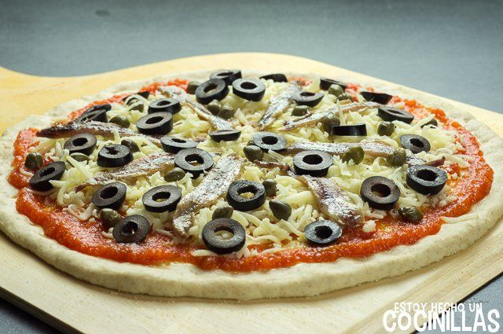

Pizza Casera de atún, mozzarella, pimiento y cebolla
Home

DESCRIPCIÓN
Pizza casera de masa tierna y crujiente, cubierta con salsa de tomate, queso mozzarella fundido, atún jugoso, pimiento y
cebolla en cuadritos, y aceitunas verdes y negras en rodajas. Perfecta para un plato sabroso, rápido y lleno de color.
INGREDIENTES
Para La Masa (1 pizza grande o 2 medianas)
- 250 g de harina de trigo común (puede ser mitad normal, mitad de fuerza)
- 150 ml de agua tibia
- 1 cucharada sopera de aceite de oliva virgen extra
- 1 cucharadita de sal
- ½ cucharadita de azúcar
- 500 g de queso crema (tipo Philadelphia)
- 7 g de levadura seca de panadería (o 15 g de levadura fresca)
Para la cobertura
- 150 g de queso mozzarella rallado
- 1 lata de atún en aceite o natural (bien escurrido)
- ½ pimiento rojo o verde (en cuadraditos)
- ½ cebolla mediana (en cuadraditos)
- 50 g de salsa de tomate para pizza
- Orégano seco al gusto
- 1 chorrito de aceite de oliva virgen extra
- 8-10 aceitunas negras o verdes (en rodajas)
STEPS
- Mezclar harina, levadura, sal, agua y aceite; amasar.
- Dejar reposar hasta que doble tamaño.
- Precalentar el horno a 220 °C.
- Estirar la masa sobre bandeja.
- Untar salsa de tomate.
- Espolvorear mozzarella.
- Poner atún, pimiento y cebolla.
- Colocar aceitunas y un poco de orégano.
- Hornear 12–15 minutos.